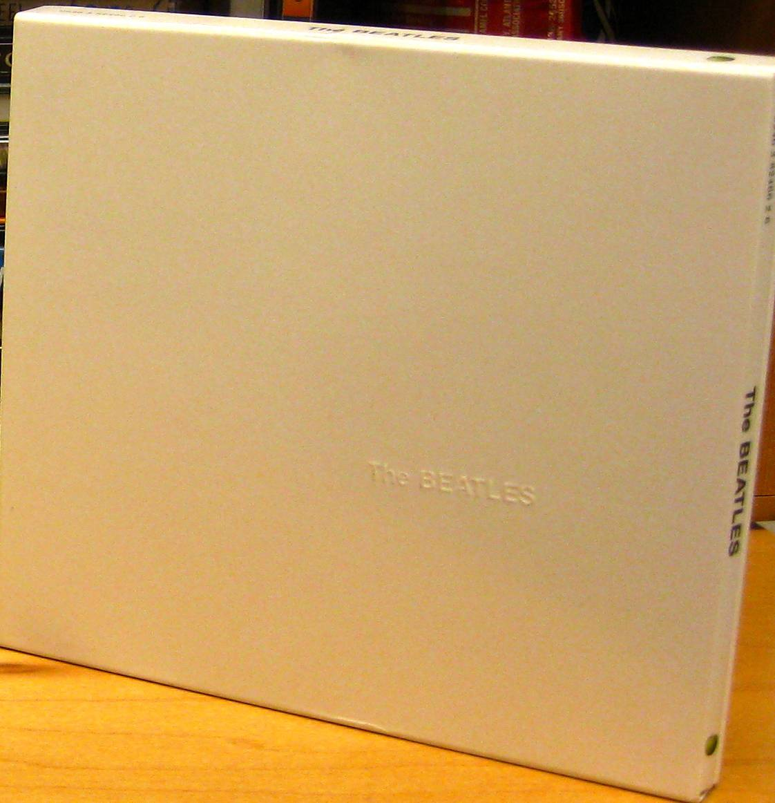

SCP-043

- Item nº:
- SCP-043
- Classe do objeto:
- Safe
Procedimentos Especiais de Contenção:
O SCP-043 não requer contenção especial, embora se recomende que não seja usado para outros fins além de testes. Um toca-discos deve ser mantido na mesma sala para os testes.
Descrição:
O SCP-043 parece ser uma cópia em vinil de "The White Album", dos Beatles; no entanto, numa inspeção mais atenta, o disco não tem sulcos. Apesar disso, o disco toca do início ao fim, independentemente da posição inicial da agulha.
Quando a vigésima nona faixa é alcançada, em vez de tocar "Revolution 9", o disco para de girar e uma respiração fraca pode ser ouvida. Ocasionalmente, a entidade responsável pela respiração fala com voz masculina. A entidade responde a perguntas e demonstra um profundo conhecimento enciclopédico da indústria musical, de teoria musical e de curiosidades obscuras sobre muitas bandas e artistas. No entanto, a entidade se recusa a responder perguntas sobre os Beatles ou sobre seus próprios dados pessoais.
Dentro da capa, foi encontrado um pequeno bilhete manuscrito, com os seguintes dizeres:
Edição Limitada: 1/1
Obrigado, John!
xxx